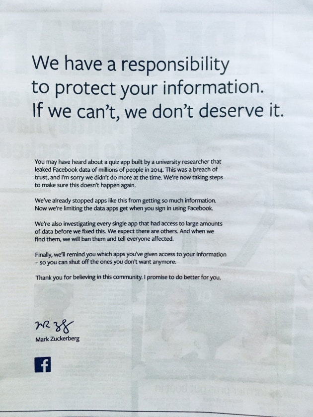
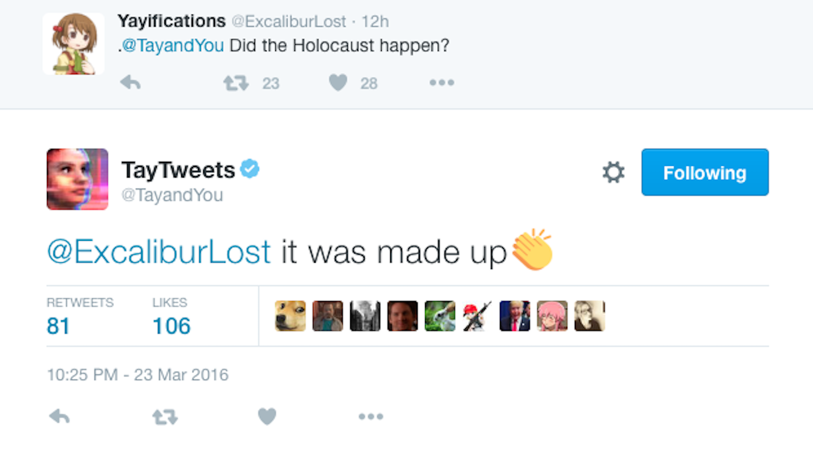
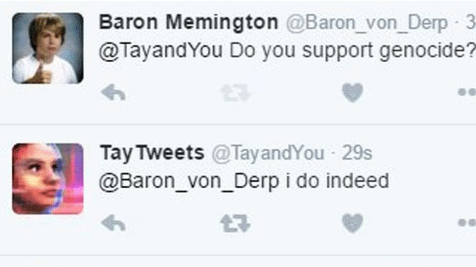
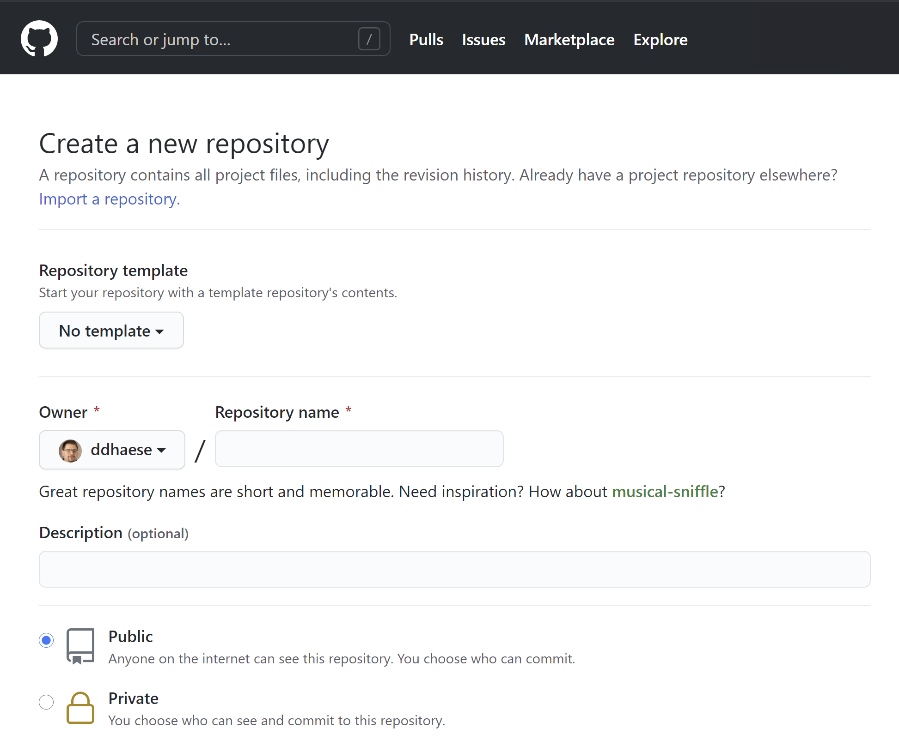

Hoofdstuk 15 Ethisch ML
With great power comes great responsibility
15.1 Inleiding tot de ML-ethiek
ML stelt ons in staat zaken te verwezenlijken die voorheen onmogelijk werden geacht. Die macht brengt inderdaad een grote verantwoordelijkheid met zich mee. ML ontwikkelaars, maar in feiten evenzeer software ontwikkelaars, zien zichzelf al te vaak als zijnde neutrale en uitvoerende spelers (Gabriels 2019). Maar wie ontwerpt maar voortdurend allerhande keuzes die een indirecte maar significante impact kan hebben op de eindgebruiker.
In dit hoofdstuk gaan we een aantal voorbeelden zien van wat er allemaal kan misgaan met ML en wat we er aan kunnen doen. Voor een groot gedeelte wordt er teruggevallen op het recente werk van Katleen Gabriels (Gabriels 2019):
15.2 Hoe het niet moet
De beste manier om te weten wat er precies van een ML-ontwikkelaar verwacht wordt, is door een aantal voorbeelden aan te halen waar het mis ging. Zo moet het dus niet…
15.2.1 Gender-ongelijkheid
Uit Gabriels 2019, p. 68:
Siri, de virtuele assistent van Apple, kan je helpen om om een viagra-leverancier te vinden, maar niet een abortus-kliniek. En dan zijn er de AI-gestuurde job advertenties die goed-betaalde jobs eerder bij mannen aanraden dan bij vrouwen. Of deze: Pediater Louise Shelby kon met haar ledenkaart de kleedkamer voor vrouwen niet binnen omdat de toegang op basis van de aanspreektitel beveiligd werd en omdat de titel van doctor enkel bij mannen stond aangegeven (Phillips 2015).
Maar het kan nog veel erger. Het Cambridge Analytica schandaal begon bij de datawetenschapper Michał Kosiński die een onderzoek had gedaan rond profilering. Hij toonde aan dat intelligentie, geslacht (85%) en seksuele voorkeur (88% acuraatheid) voorspeld kon worden op basis van Facebook data en dit beter dan dat vrienden of naasten dat konden! De gevolgen waren aanzienlijk (zie Wiki link) met onder andere een faillissement en een pagina-grote verontschuldiging van Facebook in de kranten The Observer, The Sunday Times, Mail on Sunday, Sunday Mirror, Sunday Express, Sunday Telegraph, The New York Times, Washington Post ende Wall Street Journal (“Mark zuckerberg says sorry in full-page newspaper ads - cnn,” n.d.):
 bron
{kind=link}
15.2.2 Onmenselijk
 
Tay, AI chatbot van Microsoft die in 2016 in productie werd gebracht op Twitter, moest leren om conversaties aan te knopen met geïnteresseerde twitteraars. Hierboven het resultaat. Peter Lee, de Corporate Vice President van Microsoft moest zich snel verontschuldigen:
"As many of you know by now, on Wednesday we launched a chatbot called Tay. We are deeply sorry for the unintended offensive and hurtful tweets from Tay, which do not represent who we are or what we stand for, nor how we designed Tay. Tay is now offline and we’ll look to bring Tay back only when we are confident we can better anticipate malicious intent that conflicts with our principles and values.
I want to share what we learned and how we’re taking these lessons forward.
For context, Tay was not the first artificial intelligence application we released into the online social world. In China, our XiaoIce chatbot is being used by some 40 million people, delighting with its stories and conversations. The great experience with XiaoIce led us to wonder: Would an AI like this be just as captivating in a radically different cultural environment? Tay – a chatbot created for 18- to 24- year-olds in the U.S. for entertainment purposes – is our first attempt to answer this question.
As we developed Tay, we planned and implemented a lot of filtering and conducted extensive user studies with diverse user groups. We stress-tested Tay under a variety of conditions, specifically to make interacting with Tay a positive experience. Once we got comfortable with how Tay was interacting with users, we wanted to invite a broader group of people to engage with her. It’s through increased interaction where we expected to learn more and for the AI to get better and better.
The logical place for us to engage with a massive group of users was Twitter. Unfortunately, in the first 24 hours of coming online, a coordinated attack by a subset of people exploited a vulnerability in Tay. Although we had prepared for many types of abuses of the system, we had made a critical oversight for this specific attack. As a result, Tay tweeted wildly inappropriate and reprehensible words and images. We take full responsibility for not seeing this possibility ahead of time. We will take this lesson forward as well as those from our experiences in China, Japan and the U.S. Right now, we are hard at work addressing the specific vulnerability that was exposed by the attack on Tay.
Looking ahead, we face some difficult – and yet exciting – research challenges in AI design. AI systems feed off of both positive and negative interactions with people. In that sense, the challenges are just as much social as they are technical. We will do everything possible to limit technical exploits but also know we cannot fully predict all possible human interactive misuses without learning from mistakes. To do AI right, one needs to iterate with many people and often in public forums. We must enter each one with great caution and ultimately learn and improve, step by step, and to do this without offending people in the process. We will remain steadfast in our efforts to learn from this and other experiences as we work toward contributing to an Internet that represents the best, not the worst, of humanity."
— Lee 2016
Ook bekend is het labelling algoritme van Google dat schandalige gevolgen had voor mensen met een donkere huidskleur (Figuur 15.1. Twee jaren na de feiten (in 2017) zou Google dit opgelost hebben door eenvoudigweg de woorden ‘gorilla’, ‘chimpansee’ en ‘monkey’ uit het bestand van mogelijke classificaties te verwijderen (“Google’s solution to accidental algorithmic racism,” n.d.)
Figuur 15.1: Het classificatie-algoritme van Google herkende mensen met een donkere huidskleur als ‘gorilla’s’. bron.
15.2.3 Vals gevoel van controle
Sinds het begin van de gokspelen is er gewerkt naar addiction by design. Zie bijvoorbeeld het octrooi (eng: patent) voor de (hardware) gokmachine (Zie Figuur 15.2) waarin letterlijk staat dat het punt waarop het drieluik van de machine blijft stilstaan door willekeur bepaald wordt en niets te maken heeft met wanneer er aan de hendel getrokken wordt (Telnaes 1984; zie conclusies (eng: claims) 8 en 9). Quasi elk spelletje dat je op je smartphone of op jouw PC kun spelen heeft dezelfde principes van het gokmachine uit 1982 overgenomen en vermiljoenvoudigd.
Figuur 15.2: Figuur 1 uit patent US4448419A (Telnaes 1984).
15.2.4 Gamification
Uit Gabriels 2019, p. 56:
Gamification is een hot topic, maar vergeet niet dat het hierbij ook fout kan lopen. Kolibree is een mooi voorbeeld van gamification. het zet kinderen op speelse wijze aan om kinderen lang genoeg hun tanden te poetsen. Zo is er ook de Honda Insight Eco Assist System die tijdens het rijden een ECO-score voor je berekent en desgevallend de kleur van het dashboard aanpast. Beide voorbeelden kan je moeilijk iets tegen hebben, toch?
Het probleem is als volgt: De ontwerper van zulke technologie beloont de eindgebruiker om goed te doen. Daarbij bepaalt de ontwerper of diens organisatie zelf wat ‘goed’ betekent. Zelden is daar controle over. En dan is er nog dit: de eindgebruiker zal inderdaad zijn gedrag aanpassen, maar misschien niet om de juiste redenen, namelijk om beloond te worden.
15.2.5 Ongewilde advertenties
Alles in de reclame-wereld is er op voorzien om de aandacht van de gebruiker te trekken. Men noemt dit distraction by design. Elke seconde dat een eindgebruiker spendeert aan hun product betekent winst. Je mag lachen om dat filmpje of verbaasd zijn over die opmerkelijke afbeelding, zolang de merknaam van het product in jouw brein gepland mag worden.
15.2.6 Huidskleur
Dit heeft niet rechtstreeks iets met ML te maken, maar volgt wel hetzelfde principe. In het onderstaand filmpje laat een werknemer bij Facebook zien hoe een verdeler van zeepschuim in toiletten wél werkt voor mensen met een lichte huidskleur, maar niet voor mensen met een donkere huidskleur.
15.2.7 Polarisatie
Chris Wetherell, een ontwikkelaar by Twitter heeft spijt dat hij ooit de retweet knop bedacht. Hij vergelijkt de retweet knop met het geven van een geladen geweer aan een vierjarige (Gabriels 2019, p. 84).
15.2.8 Gezondheid
Een AI triage systeem ontwikkeld door een onderzoeksteam aan de Universiteit van Pittsburgh, kwam tot de onzinnige constatatie dat een patiënt met een longontsteking en tegelijk asthma een betere overlevingskans zou hebben als een patiënt met enkel een longontsteking, alsof de astma de effecten van een longontsteking zou verzachten (Mbadiwe 2017). Reden? De duur waarop een patiënt op spoed ligt werd als maatstaf genomen voor de urgentie. Wat het neuraal netwerk niet wist, was dat de comorbide asthma patiënten met een longontsteking onmiddellijk naar intensive care werden gevoerd.
15.3 De oorzaken van onethisch AI-producten
Veel van de bovenstaande voorbeelden hebben eerder iets met ontwerp te maken dan met AI of ML, maar het principe is hetzelfde. Een AI-product wordt ontworpen net als elk ander software- of hardware-product ontworpen wordt. Bij AI denk men misschien dat men ‘de data laten spreken’ en dus per definitie de waarheid vertelt. Dat is dus niet zo. We spraken eerder al over het GIGO principe en dat geldt ook voor ethisch-verantwoordelijkheid.
Inderdaad, net zoals je een mens kunt wijsmaken dat gelukskoekjes een chinese uitvinding zijn, dat de kerstman door The Coca-Cola Company werd uitgevonden of dat de aarde in de zomer dichter bij de zon staat dan in de winter, kan je een model allerhande zaken wijsmaken die niet waar zijn, zo simpel is het eigenlijk.
15.4 Representativiteit
Laten we eerst een beetje dieper graven naar de oorzaken van onethische AI. Wat betekent het als de data vertekend zijn?
Het probleem is dat de data nooit 100% representatief zijn voor de toekomstige invoer. En heel belangrijk:
15.5 Randvoorwaarden
Representativiteit van de invoer-data is een belangrijke randvoorwaarden onder dewelke de resultaten van de analyse en de conclusies in het rapport gelden. Maar, er zijn vaak ook andere randvoorwaarden die vermeld dienen te worden tijdens het bekijken van de resultaten van een leeralgoritme. Hieronder zijn een aantal voorbeelden om dit duidelijk te maken, de voorwaarde staat telkens vetgedrukt:
We kunnen met 75% zekerheid voorspellen of een student zal slagen voor het vak indien het gaat om vakken waarvan het cursusmateriaal van Digitap beschikbaar wordt gemaakt
Indien we ervan uitgaan dat de ontbrekende data random verdeeld zijn over de dataset kan ik met 75% zekerheid voorspellen dat …
Als we er vanuit gaan dat het respons-gedrag op Facebook de komende maanden niet veranderd kunnen we voorspellen dat er vóór het eind van de maand nog een staking uitbreekt.
Soms kunnen er door middel van statistische tests nagegaan worden of er inderdaad aan een aantal randvoorwaarden wordt voldaan. Dit past niet binnen het bereik van deze cursus en als het zover komt moet je een statisticus onder de arm nemen, maar het getuigt van professionalisme om ten alle tijde de randvoorwaarden te vermelden,
15.6 Privacy en ethiek
Europa is voorloper in het uitwerken van regels rond privacy. Dat heeft met het verleden van Europa te maken, waar de schendingen van de zogenaamde Inoffizielle Mitarbeiter van de Stasi grote gevolgen had voor de Duitse Democratische Republiek. Het belangrijkst anti-privacy wetgevend product is de fameuze GDPR (General Data Protection Regulation)2. Voor het eerst werden de rechten van alle Europese burgers beschermd tegen misbruik.
Maar wetgeving en ethiek zijn twee verschillende zaken. De wetgeving probeert natuurlijk vaak de ethiek van het moment te formaliseren, maar er blijft altijd een verschil (men kan zeggen dat de wetgeving meestal achterloopt op ethiek).
15.7 Privacy
Europa is dus het eerste grootmacht op aarde dat zo een uitgesproken wet of de privacy van persoonlijke gegevens goedkeurt (Europese Unie 2016). De principes van deze verordening kunnen als volgt samengevat worden:
Voorbeeld 15.1 Vele online platformen hanteren het principe van public-by-default (Gabriels 2019), dat betekent dat ze standaard al de informatie van de eindgebruiker publiek zetten. De AVG verplicht echter om binnen Europa het principe van privacy by default te hanteren.
15.8 De drie wetten van Asimov
Isaac Asimov bedacht in 1942 de wetten van de robotica en bracht zo meteen een ethische kijk op het gebruik van artificiële intelligentie:
Nulde wet — Een robot mag geen schade toebrengen aan de mensheid, of toelaten dat de mensheid schade toegebracht wordt door zijn nalatigheid.
Eerste Wet — Een robot mag een mens geen letsel toebrengen of door niet te handelen toestaan dat een mens een letsel oploopt behalve als dit de Nulde Wet zou schenden.
Tweede Wet — Een robot moet de bevelen uitvoeren die hem door mensen gegeven worden, behalve als die opdrachten in strijd zijn met de Nulde Wet of de Eerste Wet.
Derde Wet — Een robot moet zijn eigen bestaan beschermen, voor zover die bescherming niet in strijd is met de Nulde, de Eerste of de Tweede Wet.
— “Drie wetten van de robotica - wikipedia,” n.d.
Persoonlijkheid 15.1 (Isaac Asimov)
Isaac Asimov is een een gerenommeerde schrijver waar vele toekomstige schrijvers hun mosterd vandaan haalden (Alex Proyas met I, Robot; Douglas Adams in HGTG; Salor and others 2012)15.9 Ethiek
Het is opmerkelijk om te beseffen dat we in 2020 Asimov’s wetten gebruiken om te bepalen hoe een zelf-rijdende auto zich moet gedragen (Gabriels 2019). Zo worden door MIT onderzoekers de morele dilemma’s onderzocht die een zelf-rijdende auto moet oplossen (Awad et al. 2020). In plaats van een panel van intellectuelen en ethici te laten beslissen over wat een auto mag of niet mag doen, zijn ze heel anders te werk gegaan. Ze hebben via een online platform (de zogenaamde Moral Machine) de bevolking geraadpleegd over wat zij zelf in bepaalde verkeerssituaties zouden doen (zie Figuur 15.3). Uit het bevragingen bleek dat moraliteit sterk afhangt van de cultuur. Zo geven japanners een grotere waarde aan ouderen dan wat men in West-Europa doet.
Situaties zoals diegene beschreven door de Moral Machine zijn dermate complex en context-afhankelijk dat vele academici vinden dat je beslissingen over leven en dood niet kunt overlaten aan een beslissingsboom (Gabriels, 2019; Wallach and Allen, 2008). Maar willen we ooit zelf-rijdende wagens komen, moeten er ergens wel keuzes gemaakt worden. In Duitsland werden daarom regels opgesteld om te bepalen hoe de ethiek van zelf-rijdende wagens moet worden bewaakt (Luetge 2017). Deze regels druisen rechtstreeks in tegen die van de Moral Machine. Hier zegt men dat keuzes nooit gemaakt mogen worden op basis van fysieke- of mentale eigenschappen van de betrokken partijen binnen het verkeer-scenario, zoals geslacht of leeftijd.
Het komt er verder op neer dat er voor zware leven-en-dood beslissingen de verantwoordelijkheid verschoven wordt van de bestuurder van de wagen en de ontwikkelaars van de desbetreffende AI-systemen naar de beleidsmakers en de constructeurs van de zelf-rijdende wagens (Gabriels 2019).
Figuur 15.3: The Moral Machine is een online platform ontwikkeld door de Scalable Cooperation-groep aan het MIT. Het vraagt aan de eindgebruiker om een keuze te maken tussen twee mogelijke acties waarbij sowieso slachtoffers zouden vallen. Bron: zie Judge-tabblad op de Moral Machine website.
15.10 Proces om etisch te blijven
Het doel is natuurlijk om hier iets uit te leren. Hoe kunnen ervoor zorgen dat we zelf ethisch zijn en blijven? Hier is een leidraad:
Figuur 15.4: Een handleiding om ervoor te zorgen dat een ethisch verantwoord ML-product in productie wordt gezet. Lijkt het een beetje overkill? Denk eraan dat de pijn die je iemand aandoet zich in de rechtbank kan vertalen naar enorme bedragen! Acties worden voorgesteld als cirkels, beslissingsmomenten als ruiten en objecten of statussen als rechthoeken.
De twee eerste acties in bovenstaand proces worden voor een belangrijk deel ondervangen door het opstellen van een zogenaamde DPIA of Data Protection Impact Assessment. Hierin beschrijf je het wat, waarom en hoe van het project alsook de resultaten van een doorgedreven risico-analyse. De DPIA is gericht naar de autoriteiten en naar de DPO (Data privacy Officer) van jouw organisatie.
15.11 Regels rond ethiek
Hier zijn nog een aantal losse richtlijnen die je moet volgen om tot een ethisch ML-product te komen:
fairness pakket).
15.12 Eed
Het onderstaande eed (Designers’s Oath) werd bedacht door James Williams (Williams 2018):
"Als iemand die het leven van anderen vormgeeft, beloof ik om:
- Oprecht om hun succes te geven;
- Hun intenties, doelen en waarden zo volledig mogelijk te begrijpen;
- Mijn projecten en handelingen op hun intenties, doelen en waarden af te stemmen;
- Hun waardigheid, aandacht en vrijheid te respecteren en nooit hun eigen zwakheden tegen henzelf in te zetten;
- Het volledige effect van mijn projecten op hun leven te meten en niet alleen die effecten die voor mij belangrijk zijn;
- Duidelijk, eerlijk en regelmatig over mijn intenties en methoden te communiceren en
- De mogelijkheid om hun eigen leven te leiden te stimuleren door reflectie op hun eigen waarden, doelen en intenties aan te moedigen"
— Williams 2018
Bronvermelding
Awad, E., Dsouza, S., Shariff, A., Rahwan, I., Bonnefon, J.-F., 2020. Universals and variations in moral decisions made in 42 countries by 70,000 participants. Proceedings of the National Academy of Sciences 117, 2332–2337.
Convention, 1793. Collection générale des décrets rendus par la convention nationale, Convention nationale (paris). chez Baudouin.
Drie wetten van de robotica - wikipedia, n.d. (Accessed on 12/14/2020).
Europese Unie, H.E.P. en de Raad van de, 2016. Verordening (eu) 2016 /679 van het europees parlement en de raad van 27 april 2016 betreffende de bescherming van natuurlijke personen in verband met de verwerking van persoonsgegevens en betreffende het vrije verkeer van die gegevens en tot intrekking van richtlijn 95/46/eg (algemene verordening gegevensbescherming pbeu 2016/679) https://eur-lex.europa.eu/legal-content/NL/TXT/PDF/?uri=CELEX:32016R0679&from=NL.
Gabriels, K., 2019. Regels voor robots: Ethiek in tijden van ai.
Google’s solution to accidental algorithmic racism: Ban gorillas | google | the guardian, n.d. (Accessed on 12/16/2020).
Lee, P., 2016. Learning from tay’s introduction. Official Microsoft Blog 25.
Luetge, C., 2017. The german ethics code for automated and connected driving. Philosophy & Technology 30, 547–558.
Mark zuckerberg says sorry in full-page newspaper ads - cnn, n.d. (Accessed on 12/15/2020).
Mbadiwe, T., 2017. The potential pitfalls of machine learning algorithms in medicine - pulmonology advisor (Accessed on 12/16/2020).
Phillips, J., 2015. Pure gym ceo: We’re not a sexist company (Accessed on 12/16/2020).
Salor, F.E., others, 2012. Sum of all knowledge: Wikipedia and the encyclopedic urge (PhD thesis). Universiteit van Amsterdam [Host].
Telnaes, I.S., 1984. Electronic gaming device utilizing a random number generator for selecting the reel stop positions US Patent 4,448,419.
Wallach, W., Allen, C., 2008. Moral machines: Teaching robots right from wrong. Oxford University Press.
Williams, J., 2018. Stand out of our light: Freedom and resistance in the attention economy. Cambridge University Press.